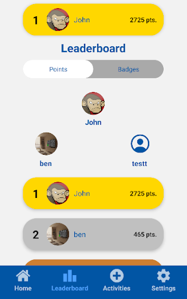

The NSA Cyber Exercise (NCX) is a three day long CTF style competition between all the Senior Military Colleges (SMC) and Military Academies. I competed in the Software Engineering module and helped my team to build and break a control pannel meant to regulate pipelines. Overall, my team took 5th place, beating all the other SMCs.
The Army Cyber Institute (ACI) is the US Army's facility for research, advice, and education in the cyber domain. During my time there, I worked with a fellow intern to port a large MATLAB project to Python3. To facilitate the porting process, I wrote a small python library for converting MATLAB syntax to python. I also designed and implemented a tool for the creation of configuration files for the MATLAB program using Tkinter. At the end of the internship I was rated in the top 2 out of the 30 interns in my cohort.
Vector Rideshare was a student led startup that aimed to provide a more community oriented approach to ridesharing with a focus on universities. I worked on the product development team and let a three person subteam. I held weekly team meetings where I helped to teach basic skills such as Git and the command line and got status updates on various projects that teammates were working on. I worked primarily in TypeScript and React on developing the backend of a game to be integrated into the main app as well as a dashboard for tracking rider covid status. My experience at Vector Rideshare gave me a valuable insight as to what it takes to work with a small team in a startup environment in its earliest stages.
| Languages | Tools/Technologies |
|---|---|
| Python | Agile Methodologies
|
C
|
Firebase
|
Java
|
Flask
|
| Javascript | Linux (Arch, Ubuntu, Kali)
|
C++
|
Git
|
| HTML | Node.js
|
| CSS | React.js
|
| MATLAB | React Native
|
Worked with three other students to develop a fitness competition app for the Virginia Bar Association. Weekly client meetings were held where we discussed our progress and their expectations. Throughout the course of development, Agile methodologies were used to keep us on track to meet our client's deadlines. The app was built using React Native and Firebase. My largest contribution was the leaderboard page seen below. Each user item linked to their profile page and the leaderboard could be sorted by either total points or badges aquired.
With the Win32API, OpenCV, and Numpy, I can successfully identify and track the ball on the screen. This project is ongoing and has seen several approaches to ball identification and tracking including: centroid tracking, template matching, "You only look once" object detection, and most recently cascading classification. I have had the most success implementing template matching, however I hope that training a cascading classifier will yield better results.
A personal web server that can serve files, stream MP4 video, and provide a simple token-based authentication API. Persistent connections as per the HTTP/1.1 protocol were also implemented. Hosed a small react-app within a Docker container on an AWS node using the server.